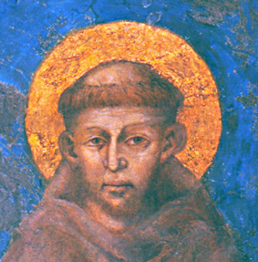

San francisco es importante en la historia de la poesía y literatura italiana ya que es él quien decide por primera vez escribir las palabras usadas por los ciudadanos en papel y usarlas para un texto de misa con estructura de poesía. Propongo debajo un link a una página con informacíon sobre su texto, el cántico de las creaturas
Se trata de un hombre que después de ser capturado durante una guerra, decide renunciar a la vida que llevaba como comerciante rico y dedicarse a la iglesia católica, pero la misma iglesia en un inicio lo consideró loco por dar el mismo valor a un ser humano y un animal común.Fundó la orden de los fraciscanos y murió por causas naturales a lo que se estima fueron sus cuarenta y cinco años.
 Haga click aquí para volver a la página principal